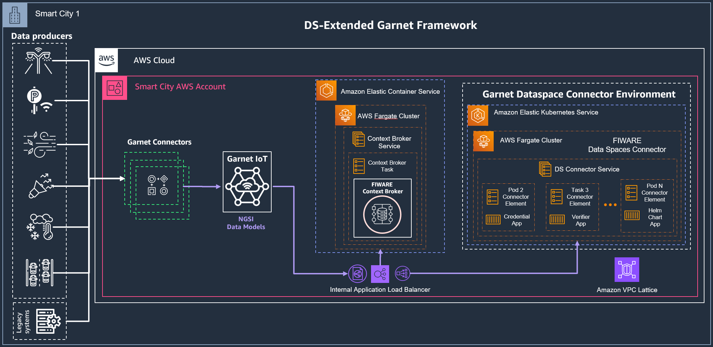

Integration with AWS Garnet Framework¶
2/ Existing AWS Garnet Framework deployment in the AWS Account with a Context Broker on AWS ECS Fargate¶
For this scenario, it is recommended that a modified version of the Helm Chart for the Data Spaces Connector is deployed to a Kubernetes Cluster in the service Amazon Elastic Kubernetes Service (AWS EKS). In this case, considering that your environment for the AWS Garnet Framework was set up following the official AWS GitHub Repository, the Context Broker is already hosted as an Amazon Elastic Container Service (AWS ECS) task in an AWS Fargate cluster and the integration to the Data Spaces Connector will be performed by deploying only this modified Helm Chart available in this reference.

IPS Service Provider Deployment in Amazon EKS¶
This section covers the setup of the prerequisites of the IPS Service Provider example, available in this reference of the archived FIWARE-Ops/data-space-connector repository.
Changes to the original Helm chart¶
The edited version of the IPS Service Provider example Helm Chart contains 3 main differences for this scenario where an existing Context Broker is already deployed and must only by extended by the additional building blocks of the Data Spaces Connector:
- Disable the deployment of the MongoDB database
- Disable the deployment of the Context Broker following the same steps
- Replace the host for the Kong proxy to point it to AWS Garnet Framework's Unified API based on API Gateway. The value for the host parameter can be found in your AWS Cloud Formation Stack named
Garnet> Outputs tab >GarnetEndpoint> Value.
# Provide the kong.yml configuration (either as existing CM, secret or directly in the values.yaml)
dblessConfig:
configMap: ""
secret: ""
config: |
_format_version: "2.1"
_transform: true
consumers:
- username: token-consumer
keyauth_credentials:
- tags:
- token-key
- tir-key
#TODO - Replace here with the AWS Garnet Framework Unified API endpoint AND REMOVE THIS LINE
services:
- host: "xxxxxxxxxx.execute-api.eu-west-1.amazonaws.com"
name: "ips"
port: 443
protocol: http
Helm Chart install steps¶
- IPS Kubernetes namespace creation
- Add FIWARE Data Space Connector Remote repository
- Install the Helm Chart using the provided file
./yaml/values-dsc-aws-load-balancer-controller-scenario2.yamlavailable in this repository
helm install -n ips -f ./yaml/values-dsc-aws-load-balancer-controller-scenario2.yaml ips-dsc dsc/data-space-connector
Other Resources - Troubleshooting¶
Once the Data Space Connector is deployed via the Helm chart in your cluster, additional scripts are also provided in this repository to help any troubleshooting of your connector deployment. Two main scripts are provided:
- 1/ Save all pods logs from a EKS cluster namespace using
kubectlto your local deployment machine under./podLogs/in this repository structure The scriptkubectlLogsFromNamespace.shlink runs a local process in your deployment machine to poll logs from all currently running pods under a namespace from your cluster and save locally for further analysis. It can be manually modified to change the desired namespace to be analyzed
and the corresponding polling period by changing the values in the script file before running it
- 2/ Delete all currently running pods from an EKS cluster namespace using
kubectlThe scriptdeleteAllPodsFromNamespace.shlink runs a local process in your deployment machine to force delete long-lived running pods from a failed deployment. It can be manually modified to change the desired namespace to be analyzed